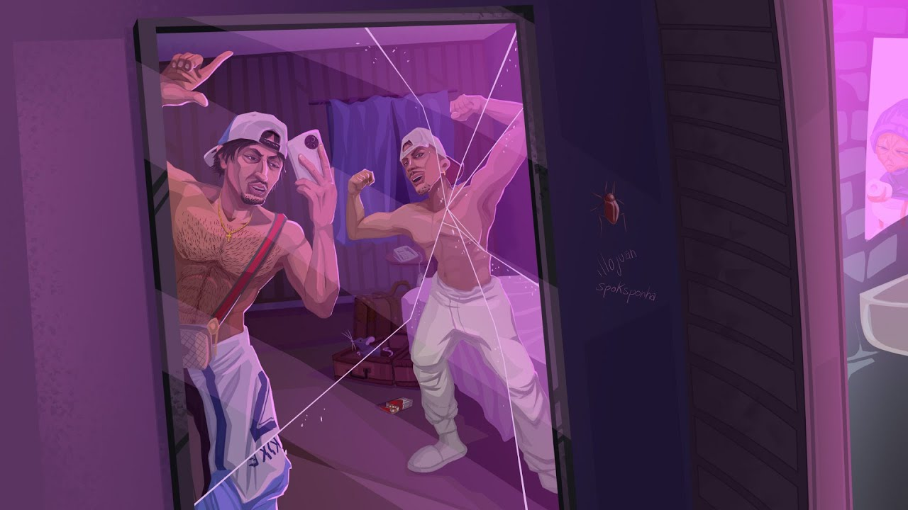

Ultimos estudios realizados FP de grado medio de SMR
Hey, yo'
Bienvenidos a Marbella
Estáis escuchando
Hotel Maligno
Kike Montilla
Juanillo Kokunero
Los Diozes
Ah, que ese es tu novio
Pero si parece Míster Potato
Hermano, parece un Pou con gafas, abe
Kike, Juanillo, pesadilla, (hey)
Somos los niños maravilla, (hey)
Tengo una Jog amarilla, (hey)
En ella paseo a la gitanilla, (hey)
En ella paseo a la jaquetona, (hey)
La llevo a comprar al Mercadona, (hey)
No ve los peos de caldo que tira
Después de comer en el McDonald's
Yo', El catalán, (¡Kike!)
Me acaba de llamar pa' trabajar (uh)
Dice que tiene una empresa montá, (¿dónde?)
"Mamografías S.A.", (¡qué guapo!)
"Mamografías S.L.", (¡vamos!)
Dice que tiene un puesto pa mí
Pero le faltan un par de papeles, (¿dónde?)
Dice que quiere
Alguien que toque las tetas de to' esas mujeres, (díselo)
Yo', ese soy yo
Kike Montilla, ahora doctor, (¿cómo?)
Ponte de rodillas, hazme el favor
Abre la boca y trágatelo (Kike)
No, no, me refiero al suero (¡ah!)
Voy a palparte un poquito los senos (¡mira!)
Estoy rapeando una base del Sceno
Aparte de doctor, también soy rapero (¡díselo, papo!)
Y si me pongo, te monto un perchero (ni el Ikea, eh)
Soy carpintero (¡Geppetto!)
Modelo Dior, yo sé de to
Yo soy un Dios
Los Diozes
Los Diozes en Marbella
Los Diozes en Marbella
Me encontré a Anuel, en la cañada (brrrr)
Le di un abrazo y robé su cubana
Tengo la entrada prohibía en el Makanan
Me siguen los rusos y mafia siciliana
Tú crees que me puede importar que me pare un policía local
Por robar un God of War? (¡qué bah!)
Le doy el juego firmao pa su niño
Que vuelva pa'l barrio y pueda vacilar
Tengo el bigote de Míster Satán
Tengo la risa del perro Patán
Dame tu Visa que hoy ceno champán
Tu novio improvisa en TortillaLand (¡frikazo!)
Salgo de un cómic, tú del Covirán
Pelo Playmobil, dame el móvil ya
Kike y Juanillo son Kobe con Shaq
Te trepan la moto por la Trinidad
Tírame el beatbox que se viene el freestyle
El cenicero preñado de mays (hey)
Pa ti el Bombay, trae pacá' el Ballantines
Que hay reservaíto con Kase y Sho-Hai
Los Diozes, (Los Diozes)
Los Diozes en Marbella
Los Diozes en Marbella
Kike, Juanillo, pesadilla (hey)
Somos los niños maravilla (hey)
Tengo una Jog amarilla (hey)
En ella paseo a la gitanilla (hey)
En ella paseo a la jaquetona (hey)
La llevo a comprar al Mercadona (hey)
No ve los peos de caldo que tira (hey)
Después de comer en el McDonald's
Hey, Kike, Juanillo, pesadilla (equipazo)
Somos los niños maravilla (yo')
Tengo una Jog amarilla (¡qué rico!)
En ella paseo a la gitanilla (sí)
En ella paseo a la jaquetona ("díceselo")
La llevo a comprar al Mercadona (sí o no)
No ve los peos de caldo que tira
Después de comer en el McDonald's
Juan Alberto García, también conocido como Illojuan. Fecha de salida 2024
